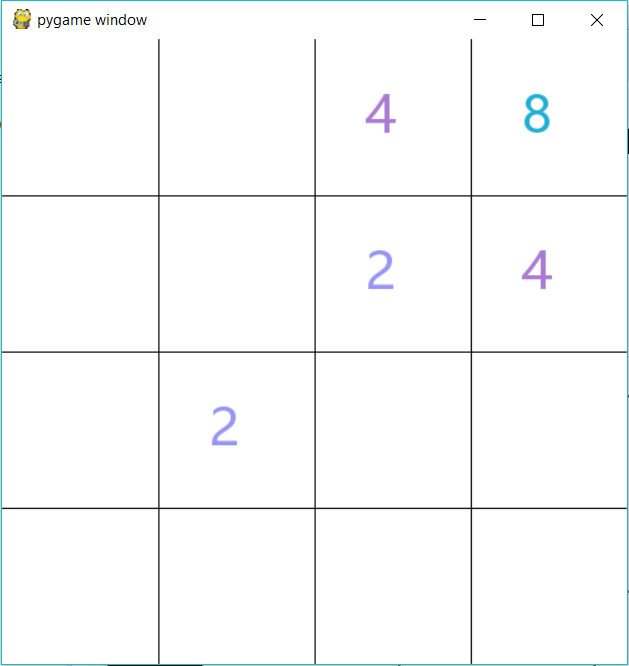
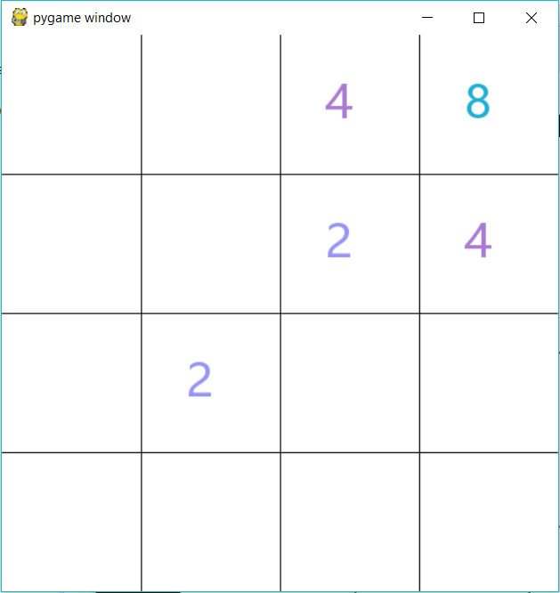
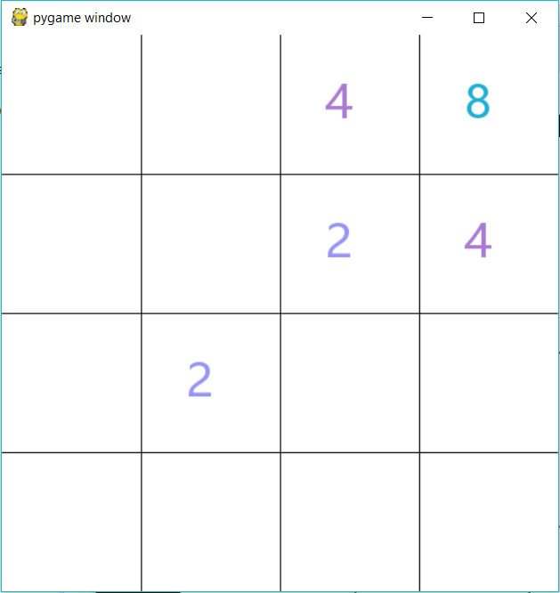

See Code
Using the pygame library for Python, I created a gui for the well-known number matching game called 2048. This game is split in three modules for game visuals, mechanics, and playing. The game mechanics include two classes - one for a number object with overridden attributes for easier implementation and another to initialize a 2048 game and include all its functions. The game visuals uses the pygame library to create a resizable surface to play the game and implements all the game mechanics within the visuals. The module used to play the game simply receives an inputted board size and creates a 2048 game object to play the game.

In the fall of 2018, I attended a 24hr hackathon at UCI. Here, my team created a web app called FitFriends that matches users as gym partners. Matching is based on categories like avaliability, type of exercise, gender, time, etc. Our team used GitKraken for version control and information distribution. In this project, I was a front end developer and created the various web pages. I learned HTML/CSS/Bootstrap over a short period of time and used CodePen, a free online showcaser for HTML/CSS, to design the desired pages. I also explored the creativity and user-friendly aspects of web pages as I communicated with the back end team to create the various functions of the web pages.
My mapquest project uses mapquest's open api to create a GPS. It is written within three python modules and implements the urllib and json libraries to access the mapquest api for python usage. When 'mapquest_output.py' is run, the user is prompted to enter a starting and ending address. With valid inputs, the program will display directions to the destination as well as other characteristics related to the journey.
My first programming experiences were in high school. Both of the projects below are written in Snap, a beginner friendly programming language made by UC Berkeley. Snap itself is written in JavaScript and consists of many "blocks" of code with prewritten functions that allow young programmers to learn basic programming logic. On the left, I made a computer version of the battleship board game. On the right is a card matching game where a player clicks on cards to try to pair up the images. These projects introduced me to simple coding functions and taught me to build abstractions for easier and more organized code.